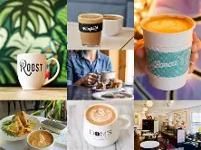
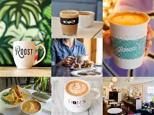

Weekend Coffee Tasting
Sunday 10AM — Learn about single origins and brewing tips.
Exceptional vegan coffee, seasonal pastries, and a warm community space.
Single origin, ethically roasted beans — served expertly.
Daily-baked, plant-based treats made from local ingredients.
Weekly events, tastings, and a welcoming space for everyone.
A small café with a big heart: sustainability, craftsmanship, and community are at our core.
 


Sunday 10AM — Learn about single origins and brewing tips.
Tuesday 7PM — Bring your creativity and meet neighbors.
Cardamom Latte & Lemon Poppyseed Scone — available for a limited time.